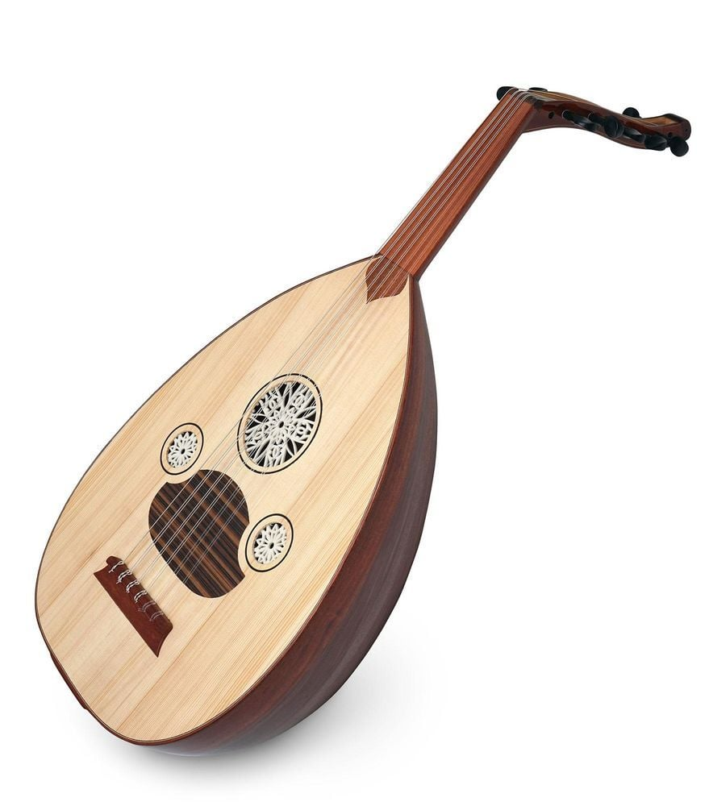

Oud · العود
Cordophone · Pincé · Manche court
Luth à manche court sans frettes, le Oud est le roi des instruments de la musique arabe classique. Son corps en forme de poire et ses 11 ou 13 cordes en font un instrument d'une richesse sonore incomparable. Il joue un rôle central dans l'improvisation modale (taksim) qui précède chaque Nouba.